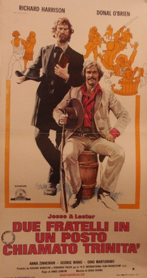

#7488 Ein Halleluja für zwei linke Brüder
Alternativ: Two Brothers in Trinity (Englischer Titel)
 
 IMDB-Wertung: 5.2 / 10
IMDB-Wertung: 5.2 / 10  Metascore: 0
Metascore: 0 
Charming, blithely amoral devil-may-care rogue Jesse Smith and peaceful, devout straight-arrow Mormon Lester O'Hara are estranged half brothers who are reunited after receiving a sizable inheritance from their deceased mother. The wildly contrasting mismatched duo get into all sorts of trouble while trying to claim said inheritance.
Jahr: 1972
Dauer: 97 Minuten
FSK: 16
Land: Italien Studio: 'Jesse & Lester'Tonspuren:
Untertitel: Deutsch,
Auflösung: 1080p (1920x816) Größe: 5591 MB
Genre: Western
Regisseur: Renzo Genta, Richard Harrison
Drehbuch: H.P. International
Soundtrack:
Darsteller:
- Richard Harrison als Jesse Smith
 Donald O'Brien als Lester O'Hara
Donald O'Brien als Lester O'Hara Luciano Rossi als Stage Robber
Luciano Rossi als Stage Robber Emilio Messina als Player
Emilio Messina als Player- Salvatore Baccaro als Paco , uncredited
 Renzo Pevarello als Poker Henchman , uncredited
Renzo Pevarello als Poker Henchman , uncredited- Anna Zinnemann als Elena Von Schaffer
- George Wang als Chinaman
- Gino Marturano als Poker
- Aldo Cecconi als Banker
- Fernando Cerulli als Thompson
- Galliano Sbarra als Doctor
- Daniela Meroni als Whore
- Alba Bonfatti als Whore
- Ada Pometti als Whore
- John Bartha als Carson
- Fortunato Arena als Outlaw
- Gianfranco Barra als
- Michele Branca als
- Calogero Caruana als Townsman
- John P. Dulaney als
- Rodolfo Licari als
- Osiride Pevarello als Outlaw #2
- Claudio Ruffini als Miner
- Goffredo Unger als
- Pasquale Basile als Cantina Owner , uncredited
 Federico Boido als Blondie , uncredited
Federico Boido als Blondie , uncredited- Franca Haas als Fat Woman in Saloon , uncredited
Datei: X:\HD-Western-1960-1979\Halleluja für zwei linke Brüder, Ein (1972, FSK16, 1920x816).mkv seit 15.11.2017
Festplatte: HD Eastern+Western
 Es gibt insgesamt 110 Filme in der Gruppe 'HD-Western-1960-1979'
Es gibt insgesamt 110 Filme in der Gruppe 'HD-Western-1960-1979'